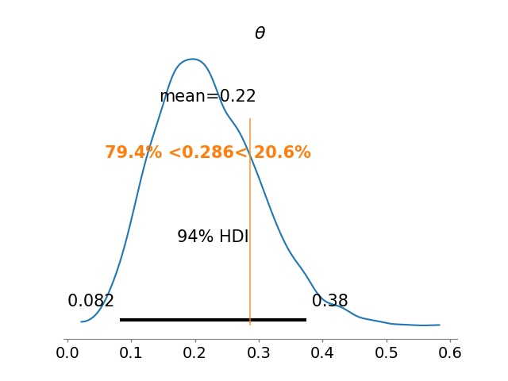
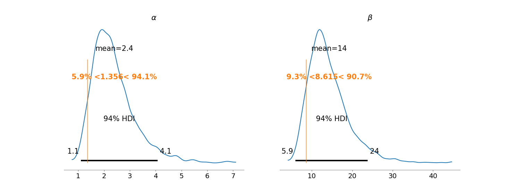
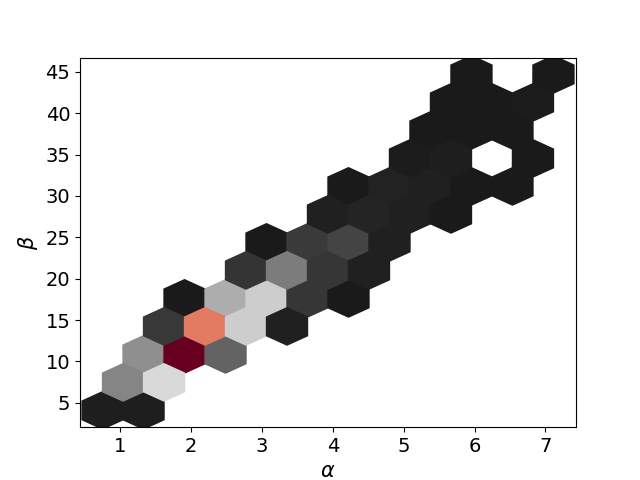
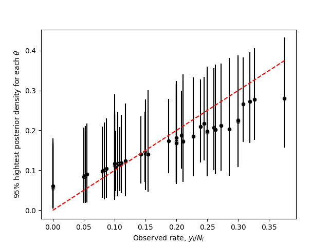

12. Hierarchical models#
12.1. General framework#
In their simplest version, in hierarchical models the parameters \(\theta_j\) come from a random sample of the prior distribution, which is determined by a vector of hyperparamters \(\phi\), that is
In general \(\phi\) is unknown and, this, has its own (hyper)prior distribution \(p(\phi)\).
Thus, the joint prior distribution is
and the joint posterior distribution satisfies that
When specifying a prior distribution for \(\phi\), we have to take special care when an improper distribution is used and check that the posterior distribution exists, this usually requires a tremendous mathematical effort. We can avoid this problem if we restrict the hyperprior to be a proper distribution.
12.1.1. Posterior conditional distribution of \(\theta\), \(p(\theta|\phi,\mathbf{Y})\)#
Note that the posterior conditional of \(\theta\) satisfies
where \(f(\phi,\mathbf{Y})\) is the “constant” of proportionality, which depens on \(\phi\) and \(\mathbf{Y}\).
12.1.2. Posterior distribution of \(\phi\), \(p(\phi|\mathbf{Y})\)#
The posterior of \(\phi\) can be calculated marginalizing the joint posterior with respect to \(\theta\), that is
Or, using the formula of conditional probability:
12.2. Rat tumor#
This example was taken from section 3.7 of [GCS+13]. The data for the example was taken from [Tar82]. The code with all the details is 20_RatTumorEmpiricalFullBayes.ipynb in the repository of the course.
As commented previously, in the evaluation of drugs for possible clinical application, studies are routinely performed on rodents. For a particular study the immediate aim is to estimate \(\theta\), the probability of tumor in a population of female laboratory rats that receive a zero dose of the drug (a control group). The data show that 4 out of 14 rats developed endometrial stromal polyps (a kind of tumor). It is natural to assume a binomial model for the number of tumors, given \(\theta\). For convenience, we select a prior distribution for \(\theta\) from the conjugate family, \(\theta\sim\textsf{Beta}(\alpha,\beta)\).
12.2.1. Empirical Bayes#
Using the historical data and the method of moments we can set some values for \(\alpha\) and \(\beta\). Since \(\theta\sim\textsf{Beta}(\alpha,\beta)\), then $\(\mathbb{E}(\theta)=\frac{\alpha}{\alpha+\beta}\text{ and }\mathbb{V}(\theta)=\frac{\alpha\beta}{(\alpha+\beta)^2(\alpha+\beta+1)}.\)\( Let be \)\bar{Y}j=Y_j/n_j\(, \)\bar{\bar Y}\( the mean of \)\bar Y_1,\ldots,\bar Y_J\(, and \)s{\bar{Y}}^2$ their variance.
Then, we have to find the values of \(\alpha\) and \(\beta\) such that $\(\bar{\bar Y}=\frac{\alpha}{\alpha+\beta} \text{ and }s_{\bar{Y}}^2=\frac{\alpha\beta}{(\alpha+\beta)^2(\alpha+\beta+1)}.\)$
Solving these equations, we find that $\(\beta = \alpha\left(\frac{1-\bar{\bar Y}}{\bar{\bar Y}}\right)\text{ and }\alpha = \frac{\bar{\bar Y}^2(1-\bar{\bar Y})-\bar{\bar Y}s_{\bar{Y}}^2}{s_{\bar{Y}}^2}.\)$
Using this simple estimate of the historical population distribution as a prior distribution for the current experiment yields a Beta(\(5.356,18.615\)) posterior distribution for \(\theta\).
The next figure shows the posterior distribuion of \(\theta\), with a vertical line is the observed proportion 4/14.
Note that the prior information has resulted in a posterior distribution substantially lower than the crude proportion 4/14.
12.2.2. Full Bayesian approach#
When we use the estimated values for \(\alpha\) and \(\beta\), we act as if those values where the real ones, which eliminates all the uncertainty that we have on the hyperparameters. Instead of this empirical approach, we can choose for a full Bayesian approach and assign a hyperprior for \(\alpha\) and \(\beta\). Assume that we have \(J\) historical data, and model
with the number of rats, \(n_j\) known, and
We just need to specify a prior for \((\alpha,\beta)\), but we have to check that the posterior exists.
Thus,
That is, given \(\alpha\) and \(\beta\), the elements of \(\theta\) are independent and follow a beta distribution
so
Expressing \(p(\theta|\alpha,\beta,\mathbf{Y})\) as:
we get that
Then,
In [GCS+13], the authors proposed the noninformative prior \(p(\alpha,\beta)\propto(\alpha+\beta)^{-5/2}\), which yields a proper posterior distribution.
The next figure shows the marginal posterior distributions of \(\alpha\) and \(\beta\), the vertical lines represent their empirical estimators. Note that in both cases they understimate the possible values for \(\alpha\) and \(\beta\).
In the next figure I present the joint posterior of \(\alpha\) and \(\beta\), note that the joint posterior is far from a gaussian distribution. This is a typical behavior for hyperparameters in hierarchical models.
Finally the nect image shows credible intervals for all the \(\theta_j\), \(j=1,\ldots,J\) against their observed proportions. Note that cases where the proportion is low tend to be move upward, and viceversa, when the proportion is high the posterior estimator tends to move downward
